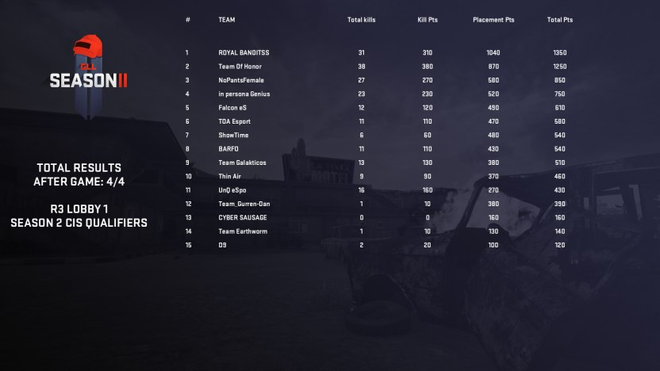

Заруба на GLL
История о турнире по PUBG

Что случится, если в схватке сойдутся и профессионал и обычный любитель? Естественно профессионал без шансов выйдет победителем... Но только не в PUBG!
Дело было весной 2018 года. Пока часть Zero-Squad'a отдыхала(нет) в армейке, некоторые бойцы продолжали свои бои. Zero и ZzzPirate этой весной уже пробовали пару турниров в PUBG в режиме Duo, но не достигли успеха, т.к. мало тренировались и не особо хорошо стреляли в этой игре. И вот в один прекрасный день Zero обнаружил турнир GLL с лан-финалом где-то в Европе. Естественно, он не смог пройти мимо и решил собрать свою команду, чтобы наконец свалить из Рашки! Поскольку в команде помимо него уже был ZzzPirate,то оставалось найти всего 2 игроков, этим он и занялся.
Почти сразу он уговорил DeSeRtoD'a, который до этого не раз заходил в игру, принять участие. После получил согласие еще и от F[A]NTICK'a. И выступили они под тегом "Team_Gurren-Dan". Впереди были 4 раунда отборочных и 2 основных этапа. Команды разбивались сначала по регионам ( наша попала в CIS), затем делились на группы по 16 команд из которых несколько, набравших наибольшее количество очков, проходили дальше. Очки начислялись за фраги и место в топе по окончанию игры. Каждый раунд состоял из 4 карт: 2 на Erangel(зеленка) и 2 в Пустыне(хз как там она в оригинале зовётся хД).
Настало время первого раунда. Из него вперёд выходили 9 из 16 команд. В группе с нашими героями была пара профессиональных команд, в связи с чем их можно было увидеть на стриме с 1000 зрителей. Взяв с собой серьёзный настрой, команда собиралась уже ринуться в бой, но... F[A]NTICK забыл проснуться и не пришёл на первые 2 карты, что ударило по боевой мощи команды. Но он всё же явился на последние 2 игры и по итогу Team_Gurren-Dan всё же смогла попасть в топ 9 и пройти дальше.
Второй раунд уже проходил полностью без F[A]NTICK (земля ему металлом). Их осталось всего трое, а перед ними второй раунд, в котором собрались лучшие команды. Каковы шансы на успех? В прошлый раз они вчетвером чудом смогли попасть в топ 9, но теперь их меньше, а враги сильнее, тем более один из членов команды играл от силы часов 5 в эту игру. Шансы были бы близки к нулю, если бы не гениальная тактика, изобретённая капитаном команды - Zero.
Её суть была в нивелировании численного недостатка и отсутствия скилла в стрельбе путём "Mind Games": начиная с этого раунда, команда переставала играть командно. Задача была в том, чтобы действовать по одиночке, пытаясь после нахождения минимальной снаряги найти какой-то транспорт и сразу двигать в разные части круга, располагаясь так, чтобы при сужении зоны, кто-нибудь из игроков команды точно остался в круге.
Также следовало двигаться максимально скрытно и думать неимоверно быстро, чтобы просчитать наименее вероятные маршруты движения противников и избежать пересечения с ними, т.к. 1vs4 шансов выжить нет.Но даже если кто-то встречал врага и умирал, то это было не критично, ведь оставались еще двое, а вот если бы наша команда двигалась вместе, то снизилась бы и мобильность, да и обнаружить их было бы легко, а проиграв перестрелку( что произошло бы с вероятностью в 90% по понятным причинам) игра бы закончилась сразу.
После применения этой тактики команда заняла топ 6 во втором этапе и прошла в третий, имея на счету всего лишь 1 фраг за все 4 карты. Для сравнения, наибольшее количество фрагов за этот раунд в регионе CIS набрала команда из Турции: 100+ за 4 карты. Именно с этой командой нашим героям предстояло встретиться в следующем раунде...
Но не только эта команда была страшна, вернее совсем не она была страшна, ведь в этот раунд прошли почти только одни профессионалы, кроме Team_Gurren-Dan в группе была лишь парочка команд любителей, а турецкая команда заняла по итогу там 6-е место с 11 фрагами. Несмотря на всех этих монстров, Team_Gurren-Dan даже не думали отступать, они были уверены, что могут преодолеть это.
Но всё же, по итогу они облажались и заняли 12 место. Опять же с одним коронным фрагом. Таким образом Team_Gurren-Dan вошли в топ 100 команд CIS. После этого команда также как и HILP распалась, т.к. ни один её член не хотел продолжать.
Документальную съёмку с мест боевых действий последнего раунда удалось запечатлить рядовому-репортёру ZzzPirate. Ознакомиться с ней вы можете по ссылкам ниже.
